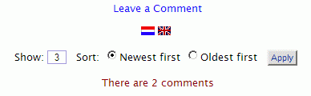

The default language package
Language file contents
Changing text in entries
Take care when editing the language file
Changing text in a custom template
Changing text in a default template
Finding the language file entry or place in the HTML to change the text
Translating the language file
Using multiple language packages
As downloaded, TalkBack comes with the English language package. A language package consists of a primary language file, an override language file and a language icon (a flag GIF). Go to the TalkBack download page for additional language packages.
The primary language file in this language pack islanguage/english.php.
The override language file in this language pack is my-english.php. It allows you to customize individual language entries without fear of your changes being overwritten in a future release.
The file contains the text entries for all labels, messages and help panels. It is a large file with over 800 entries (70kb) as of version 2.2. Each entry in the file is an element of the language array and is formatted like this:
$lang['comdisplay2'] = "There is 1 comment";
The entry’s name is contained inside the single quotes inside the brackets. The entry’s text is contained between the double quotes. Some of the entries contain html tags and/or PHP variables:
$lang['db_error'] = "<p class='tb-center tb-stress'>Comments for this page are temporarily unavailable</p>";
$lang['comdisplay1'] = "Showing $first_row-$last_row of $total_rows Comments";
The variables ($first_row, $last_row and $total_rows in the above example) are place holders and will be replaced with actual values when the page using that entry is sent to the visitor’s browser giving, for example, the message: “Showing 1-15 of 36 comments”
Note that the file does not affect the language in which dates are displayed. See Dates – language. The last line of the file must be: require 'my-english.php';. That gets your override language file and replaces entries in the primary file with entries from your override language file.
Take care when editing the language file:
The last statement in a language file must be an include of your my language file.
If you translate english.php to another language be sure require 'my-xxxxx.php'; as the last statement in that file, where xxxxx is the name of your language file.
Some entries include PHP variables and/or HTML tags. You can shift
the position of the variables and tags but don't ortherwise alter them. Variable
names look like $variable_name and {$config['variable_name']}
If you want to use quotes or other special characters in the text, use HTML special character
codes. For example: "quoted text" produces “quoted text”. Find the list of codes at Web Monkey
If you must use a " character within the text (e.g. in HTML attributes), precede it with a backslash: <p class=\"class-name\"></p>
Changing text in a custom template:
If you are creating a custom template the easiest way to change text is to replace the $lang variable with the actual text you want to appear on the page.
For example to change the comments display template “Leave a comment label” to “Enter a comment”, change:
<p id='tb-comment-link'><a href='#entry'>{$lang['comdisplay6']}</a></p>
to:
<p id='tb-comment-link'><a href='#entry'>Enter a comment</a></p>
With a custom template you don’t have to worry about your changes being overwritten if you upgrade to a new TalkBack version in the future.
Changing text in a default template:
To protect yourself against having your changes overwritten by future releases of TalkBack, copy the english.php entry you want to change to my-english.php and change it there.
Finding the language file entry or place in the HTML to change the text:
Open the page you want to change in your browser. Copy the text from the screen to the clipboard. Example: “Your email address (will not be published)” on the comments form.
Open english.php in your text editor. Invoke the search command and paste the text into the search dialog. That would take you, in this case, to the entry for $lang['comform4']. That is the entry you want to copy and change.
$lang['moderation_return_link'] = "Return";
$lang['return_link_text'] = "Return";
So be careful with very short or generic text labels. Do a second search to be sure there is only one. If there are two, change one and see if you got the correct one. If not, undo that and change the other one.
/language directory:
DEFAULT_LANGUAGE entry.
You do not have to translate all entries in the primary language file. The file is large and translating all entries would be a daunting task. At the beginning of the file, following the comments, is a table of contents. It identifies which sections contain entries that are seen by visitors to your site and which are seen only by the administrator. You may choose to translate only those sections that contain messages seen by visitors.
Make a new primary language file. Create a new text file named for the language (example: german.php). Copy the entire english.php file to it and then translate the english text in it. The last line of the file must be the include statement for the override language file, example: require 'my-german.php';.
my-english.php and rename it, for example, my-german.php. Note that the override filename must start with “my-” and the language name must be the same as the primary language file./talkback/addons/flags to /talkback/language and rename it. For example, to create a Spanish language icon you could copy one of spain.gif, mexico.gif, etc. and rename it spanish.gif.